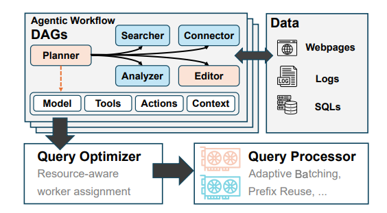

Halo: Batch Query Processing and Optimization for Agentic Workflows
arXiv (submitted)
A system that brings batch query processing and optimization into agentic LLM workflows.
Hey, I'm Junyi Shen, a second-year PhD student at the School of Computing, National University of Singapore, advised by Prof. Yao Lu in the Scalable AI Lab. I received my B.E. degree from Zhejiang University with honors from Chu Kochen Honors College.
My research lies in Machine Learning Systems, AI Infrastructure, and Broad AI. Outside academia, I enjoy anime, manga, video games, travel, and photography.

|
National University of Singapore, Singapore Ph.D. in Computer Science, 2024 – Present President Graduate Fellowship (PGF) Advisor: Yao Lu GPA: 4.9/5.0 Selected Courses
|

|
Zhejiang University, Hangzhou, China Bachelor of Engineering in Automation, 2020 – 2024 Minor in Intensive Training Program of Innovation and Entrepreneurship, Chu Kochen Honors College National Scholarship Advisor: Shibo He GPA: 3.98/4.00 |
arXiv (submitted)
A system that brings batch query processing and optimization into agentic LLM workflows.

arXiv (submitted)
A comprehensive pipeline to accelerate speculative decoding via a hybrid parallelism method.

|
Research Intern, Shanghai Qi Zhi Institute Nov. 2023 – May. 2024 Advisor: Huanchen Zhang, Yao Lu Shanghai, China |

|
Student Research Assistant, The University of Hong Kong July. 2023 – Aug. 2023 Advisor: Hengshuang Zhao Hong Kong SAR, China |
Teaching Assistant, NUS
CS6216: Advanced Topics in Machine Learning, 2025–2026
SEM1